Yamada
Yamada · Iwate
Yamada
Highlighted on the Iwate map.
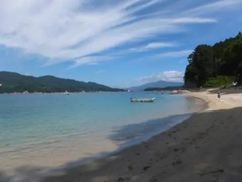
Stay
うみねこ温泉 湯らっくす
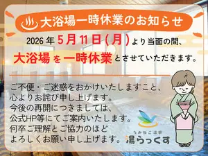
Umineko Onsen Yu Rakkusu
Onsen lodging in Yamada, Iwate.
光山温石泉 旅館岳泉荘
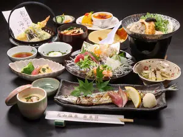
Kouyama Onjaku Izumi Ryokan Gaku Izumi Sou
Ryokan inn in Yamada, Iwate.
Dining
和海味処 いっぷく
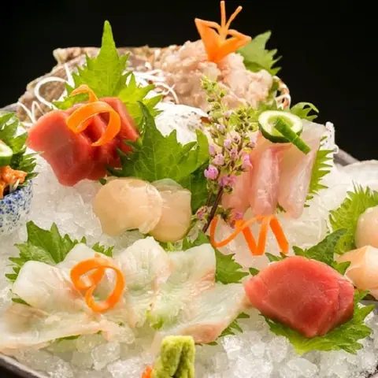
Wa Umi Ajidokoro Ippuku
Japanese restaurant in Yamada, Iwate.
ささき
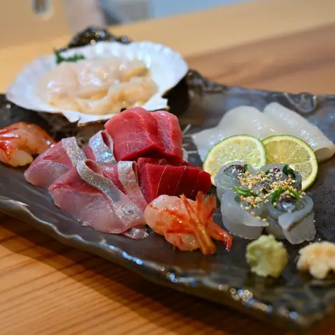
Sasaki
Izakaya in Yamada, Iwate.
三陸山田 かき小屋
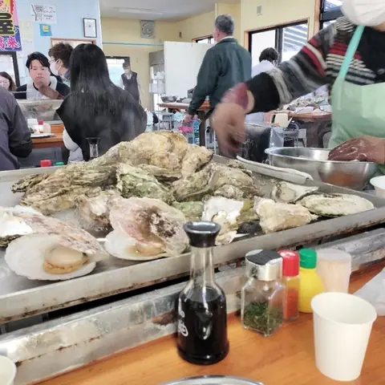
Sanriku Yamada Kaki Koya
Seafood restaurant in Yamada, Iwate.
和海浜処 いっぷく 山田船越店
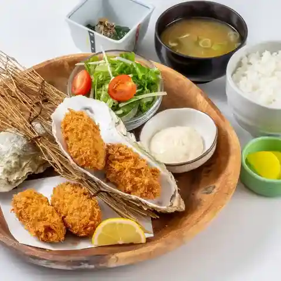
Wa Kaihin Tokoro Ippuku Yamada Funakoshi Mise
Seafood restaurant in Yamada, Iwate.
釜揚げ屋
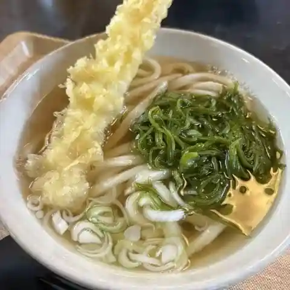
Kama Age Ya
Udon restaurant in Yamada, Iwate.
御食事処 たけなわ
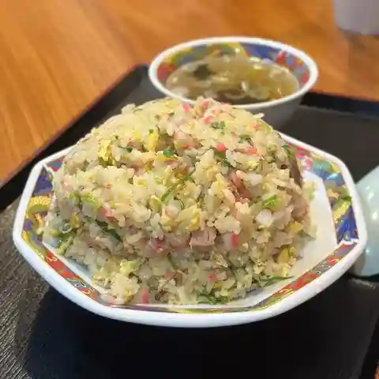
Mike Koto Tokoro Takenawa
Shokudo diner in Yamada, Iwate.
禅
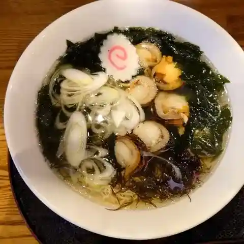
Zen
Izakaya in Yamada, Iwate.
魚河岸
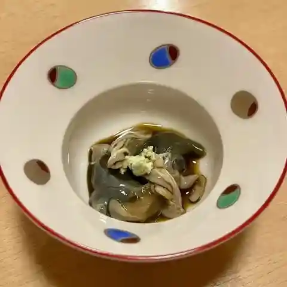
Uogashi
Sushi restaurant in Yamada, Iwate.
道の駅やまだおいすた
Michi No Eki Yamadaoisuta
Roadside-station eatery in Yamada, Iwate.
藤七屋
Fuji Shichi Ya
Ramen shop in Yamada, Iwate.
梅乃家
Umeno Ie
Shokudo diner in Yamada, Iwate.
三陸味処三五十
Sanriku Ajidokoro San Gojuu
Shokudo diner in Yamada, Iwate.
うみっぷく
Umippuku
Shokudo diner in Yamada, Iwate.
菓子工房 じょぶ
Kashi Koubou Jobu
Bakery in Yamada, Iwate.
復活おがた
Fukkatsu Ogata
Shokudo diner in Yamada, Iwate.
豪ーめん 山田店
Gouu Men Yamada Mise
Ramen shop in Yamada, Iwate.
グルメハウスシンコー
Gurumehausushinkoo
Coffee shop in Yamada, Iwate.
六もん
Roku Mon
Izakaya in Yamada, Iwate.
山田湾ベーカリー
Yamada Wan Beekarii
Bakery in Yamada, Iwate.
大衆酒場 山田屋
Taishuu Sakaba Yamada Ya
Izakaya in Yamada, Iwate.
颯-龍 山田店
Satsu - Ryuu Yamada Mise
Ramen shop in Yamada, Iwate.
笹
Sasa
Shokudo diner in Yamada, Iwate.
Sights
Kojin Beach
A beach with emerald green water and white sand at the southernmost tip of the Funakoshi Peninsula.
Uranohama Beach
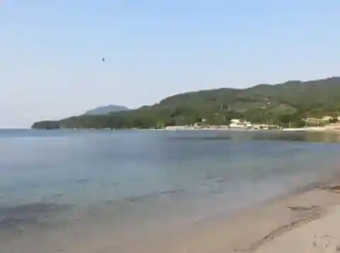
The beach is shallow and the waves are calm. Nearby are the "Oyster House" and the "Whale and Sea Science Museum" for family fun.
Sanriku Yamada Oyster Hut
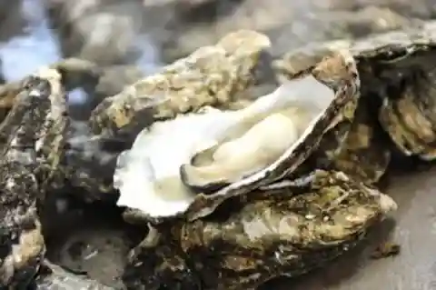
Usually from November to June, Sanriku Yamada Oyster House offers steamed and grilled oysters with a 40-minute time limit.
Business Inn Yamada
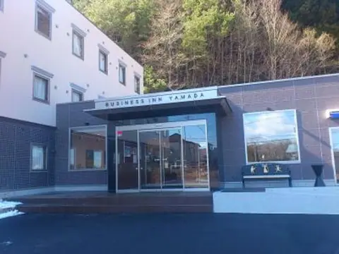
The first business hotel in Yamada Town. All rooms are equipped with a unit bath and toilet.
Funakoshi Family Travel Village Auto Campground
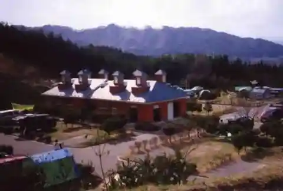
Funakoshi Family Travel Village Auto Campground
Roadside Station Yamada Oista
A roadside station that relocated and reopened in July 2023 near the Sanriku Coastal Road Yamada IC.
Farm Direct Plaza Fureai Park Yamada
*The previously operating roadside station "Yamada" was relocated and opened near the Yamada IC, and is now operating under a new name, "Fureai Park Yamada".
Osawa Garyu Plum Tree
Designated as a natural monument by Iwate Prefecture. The tree is approximately 300 years old.
Mt. Kujira
Kujirayama is located overlooking the Namiita coast and is 610m above sea level.
Whale and Sea Science Museum
The Whale and Sea Science Museum aims to introduce the mysterious ocean from various angles and deepen visitors' interest in the ocean.
Yamada Bay
Yamada Bay is almost circular, with a circumference of about 30 km, and the sea surface resembles a calm circular mirror, and the white rock surface and bright green pine trees on the large and small islands make it seem like a large miniature garden.
Sekiguchi Fudoson Gorge
The Sekiguchi River, which flows under Sekiguchi Fudoson, the inner shrine of Sekiguchi Shrine, has its water source in the virgin forest of Yamamomori.
Tabu no Oshima Island
Funakoshi Oshima is located at the southern tip of the Funakoshi Peninsula and is commonly known as "Tab no Oshima." The island, which has a circumference of 2km, is thickly covered with subtropical plants called cypress trees due to the influence of the…
Toyomane River Headwaters
About 10km upstream from Hito Bridge, deep in the Osonoera swamp, there is a limestone cave that is still not fully understood, and a forest of beech and oak trees that are about 150 years old.
Funakoshi Peninsula
It is a peninsula that juts out between Funakoshi Bay and Yamada Bay, and the cliffs run from the middle of Mt.
Holland Island
It is so called because a Dutch ship that was in trouble once stopped here.
Shijuhachizaka Observation Deck
It was named "Shijuhachizaka" because it was said to be a difficult place for transportation in the past and had many winding slopes.
Yamada Senbei
Yamada raw rice crackers are characterized by their soft texture, and the more you chew, the more the sweetness and sesame flavor spreads in your mouth.